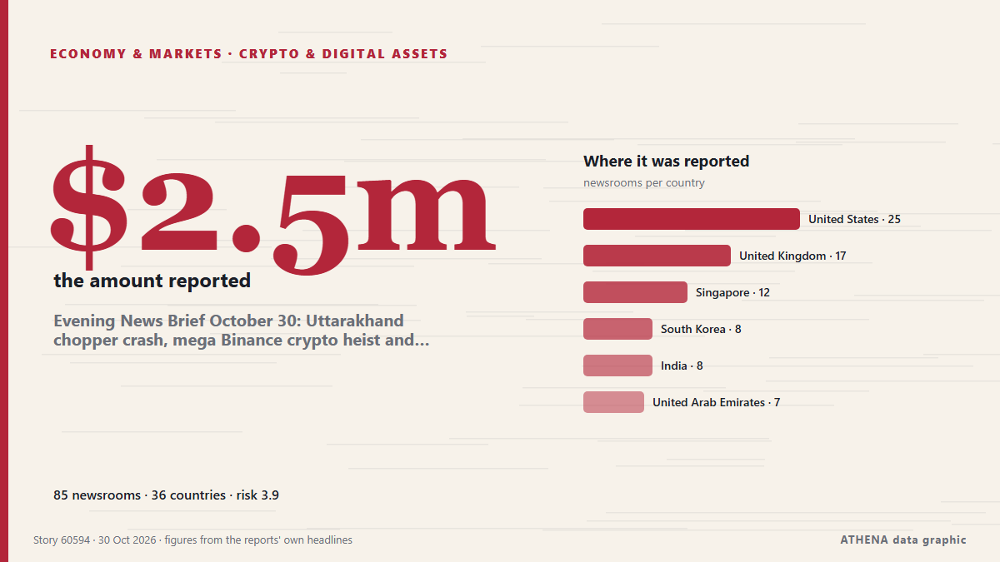

الأسواق
الأسواق اليوم: ما الذي تحرك ولماذا
آخر 24 ساعة — الأحداث: 66، الدول: 53. أعلى خطر الآن: 6.0 — The sell-off for tech stocks worsens and overwhelms Wall Street.

الاقتصاد والأسواقEvening News Brief October 30: Uttarakhand chopper crash, mega Binance crypto heist and more top stories
High on the Qinghai-Xizang Plateau, the ground stays frozen, with only the top few meters melting each summer. من Phys.org
| 18 أكتوبر | 0 |
|---|---|
| 19 أكتوبر | 0 |
| 20 أكتوبر | 6 |
| 21 أكتوبر | 5 |
| 22 أكتوبر | 18 |
| 23 أكتوبر | 6 |
| 24 أكتوبر | 5 |
| 25 أكتوبر | 9 |
| 26 أكتوبر | 31 |
| 27 أكتوبر | 23 |
| 28 أكتوبر | 18 |
| 29 أكتوبر | 17 |
| 30 أكتوبر | 32 |
| 31 أكتوبر | 1 |
مراقب الأسواق
مراقب الأسواق - أرقام رسمية
اتجاه المؤشرات الرسمية للأسواق - صعودًا أو هبوطًا أو استقرارًا - مع آخر قيمة رسمية وتاريخها، وأخبار الأسواق التي تحققت منها ATHENA. أرقام رسمية وليست أسعارًا لحظية.
الطاقة
| يوم | أسبوع | شهر | القيمة الرسمية | |
|---|---|---|---|---|
| Brent crude | ▼ | ▲ | ▲ | $123.10/bblبيانات رسمية بتاريخ 27 أكتوبر 2026 |
| WTI crude | ▼ | ▼ | ▲ | $103.37/bblبيانات رسمية بتاريخ 27 أكتوبر 2026 |
| US natural gas (Henry Hub) | ▲ | ▼ | ▼ | حركة غير معتادة $2.76/MMBtuبيانات رسمية بتاريخ 27 أكتوبر 2026 |
| European natural gas (شهر · 3 أشهر · 12 شهرًا)(شهر · 3 أشهر · 12 شهرًا) | ▲ | ▲ | ▲ | $25.49/MMBtuبيانات رسمية بتاريخ 1 سبتمبر 2026 |
| Coal (Australia) (شهر · 3 أشهر · 12 شهرًا)(شهر · 3 أشهر · 12 شهرًا) | ▲ | ▲ | ▲ | $153.84/tبيانات رسمية بتاريخ 1 سبتمبر 2026 |
الغذاء
| شهر | 3 أشهر | 12 شهرًا | القيمة الرسمية | |
|---|---|---|---|---|
| Wheat | ▲ | ▲ | ▲ | $246.85/tبيانات رسمية بتاريخ 1 سبتمبر 2026 |
أسواق الأسهم الأمريكية
| يوم | أسبوع | شهر | القيمة الرسمية | |
|---|---|---|---|---|
| S&P 500 | ▼ | ▲ | ▲ | الاتجاه فقط (المؤشر © Cboe)بيانات رسمية بتاريخ 29 أكتوبر 2026 |
| Nasdaq Composite | ▼ | ▲ | ▼ | الاتجاه فقط (المؤشر © Cboe)بيانات رسمية بتاريخ 29 أكتوبر 2026 |
الفائدة والمخاطر والدولار
| يوم | أسبوع | شهر | القيمة الرسمية | |
|---|---|---|---|---|
| US 10-year Treasury yield | ▼ | ▲ | ▼ | 4.98 %بيانات رسمية بتاريخ 29 أكتوبر 2026 |
| Market volatility (VIX) | ▲ | ▼ | ▲ | الاتجاه فقط (المؤشر © Cboe)بيانات رسمية بتاريخ 29 أكتوبر 2026 |
| US dollar, broad index | ▬ | ▬ | ▲ | 121.32بيانات رسمية بتاريخ 23 أكتوبر 2026 |
اليورو مقابل العملات الأخرى
| يوم | أسبوع | شهر | القيمة الرسمية | |
|---|---|---|---|---|
| EUR/USD | ▲ | ▼ | ▼ | 1.1172 USDبيانات رسمية بتاريخ 30 أكتوبر 2026 |
| EUR/GBP | ▼ | ▼ | ▼ | 0.8338 GBPبيانات رسمية بتاريخ 30 أكتوبر 2026 |
| EUR/CHF | ▼ | ▼ | ▼ | 0.9194 CHFبيانات رسمية بتاريخ 30 أكتوبر 2026 |
| EUR/JPY | ▼ | ▲ | ▼ | 175.68 JPYبيانات رسمية بتاريخ 30 أكتوبر 2026 |
| EUR/CNY | ▲ | ▼ | ▼ | 7.4326 CNYبيانات رسمية بتاريخ 30 أكتوبر 2026 |
| EUR/TRY | ▲ | ▲ | ▲ | 55.801 TRYبيانات رسمية بتاريخ 30 أكتوبر 2026 |
| EUR/NOK | ▼ | ▼ | ▼ | 10.3120 NOKبيانات رسمية بتاريخ 30 أكتوبر 2026 |
المصادر: إدارة معلومات الطاقة الأمريكية (النفط، الغاز الأمريكي)، صندوق النقد الدولي (الغاز الأوروبي، الفحم، القمح)، وزارة الخزانة والاحتياطي الفيدرالي الأمريكيان (عائد السندات لعشر سنوات، مؤشر الدولار) وCboe (VIX), S&P Dow Jones Indices (S&P 500), Nasdaq (Nasdaq Composite)، عبر FRED (الاحتياطي الفيدرالي في سانت لويس)؛ أسعار اليورو المرجعية © البنك المركزي الأوروبي. الأرقام هي آخر القيم الرسمية مع تاريخها، وليست أسعارًا لحظية. تحسب ATHENA الاتجاهات.
العملات المشفّرة وصناديق المؤشرات والأسهم في الأخبار
- Crypto exchanges call for quick moves to bolster defences after Binance heist الخطر 1.2 31 أكتوبر
- The sell-off for tech stocks worsens and overwhelms Wall Street الخطر 6.0 31 أكتوبر
- Bitcoin Slides Toward US$77,000 After Binance Hack الخطر 3.0 31 أكتوبر
- Colombia Stocks Fall 0.63% as Peso Slips | Colombia Market Report, Oct 29 الخطر 0.0 30 أكتوبر
- S&P Global revises Meta’s outlook to ‘negative’ on AI spending الخطر 1.9 30 أكتوبر
- Bitcoin slides below $77,000, BNB drops amid Binance hack الخطر 1.3 30 أكتوبر
- As it happened: Binance’s record $6.3B crypto hack الخطر 3.8 30 أكتوبر
- Intel’s stock crashes, knocking $12B from government’s stake الخطر 0.0 30 أكتوبر
- Anthropic expected to receive high ‘junk’ rating from credit agencies following IPO, report says الخطر 2.0 30 أكتوبر
- Evening News Brief October 30: Uttarakhand chopper crash, mega Binance crypto heist and more top stories الخطر 3.9 30 أكتوبر
المتابعات
الأحدث
BP profits hit 18-year high as Iran war drives up oil refining margins
Around quarter of EU refineries have shut down over past 2 decades, reducing domestic refining capacity by around 10%, while divestments have accelerated across Europe, says Dan Jorgensen. من Anadolu Agency (English)
Dakar Rally 2027 will not be held in Saudi Arabia, organisers say
The 2027 edition of the Dakar Rally has been moved out of Saudi Arabia due to security concerns, organisers Amaury Sport Organisation said on Sunday. من Cyprus Mail
Oil prices extend rally to near six-month high amid Houthi attacks on Saudi Arabia
Brent crude futures touched an intraday high of $114.94 a barrel on Friday after Houthi attacks on Saudi Arabia’s civilian and energy infrastructure, with India’s crude basket averaging $120.08 so… من The Hindu
Meta strikes deal to keep Zuckerberg in California after wealth tax concerns
Meta Platforms has struck a deal with Mark Zuckerberg to keep him in California after the CEO warned he was considering leaving the state that houses the company's headquarters if voters pass a… من MyJoyOnline
India's Crude Oil Import Bill Soars 46% as Middle East Crisis Drives Up Prices
India paid $15.4 billion to import crude oil in September, up by 46% from the year-ago import bill of $10.5 billion, as international oil prices and the Indian import crude basket soared amid… من OilPrice.com
Ambani's Jio to make Mumbai trading debut after record $3.2 billion India IPO
Low-cost broadband provider Jio Platforms aims for £81bn valuation when it floats on the stock market on Wednesday India’s second-richest man, Mukesh Ambani, is launching what could be the country’s… من The Guardian
Oil prices fall as peace hopes offset fears of growing Middle East conflict
Oil prices fell on Thursday, paring gains made a day earlier, as hopes for peace talks took the edge off renewed concerns over Middle East supply disruptions from escalating regional conflict. من Business Recorder
Dangote Refinery’s IPO closes with investors from 120 countries
"This is a historic achievement for Africa. من Vanguard
Tilak, Nitish rescue India from 112/6 to seal thrilling 4-wicket win vs New Zealand
In a thrilling second T20I, Tilak Varma and Nitish Kumar Reddy showcased their prowess, steering India to a nail-biting victory against New Zealand. من Times of India
Ukraine, Mideast War Drive Trump's Midterm Headache As US Oil Prices Surge
Energy exports from the Gulf have plunged since US-Israeli strikes on Iran from February caused Tehran to respond by choking off the Strait of Hormuz, a vital waterway for oil and gas transit. من NDTV
Oil prices rise after attack on Saudi Arabian refinery reignites supply concerns
Oil prices rose on Wednesday after an attack on a refinery in Saudi Arabia, the world's biggest crude exporter, renewed concerns around the risks to supply in the Middle East stemming from the… من MyJoyOnline
Price of Brent oil up above $114 per barrel on ICE first since May
The price of futures contracts of WTI crude oil reached $100.97 per barrel. من TASS (English)